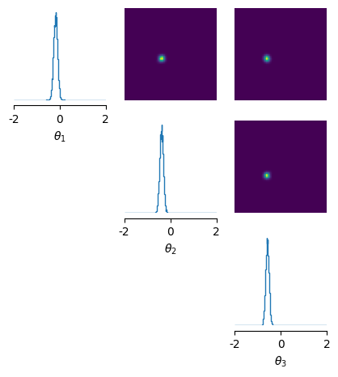
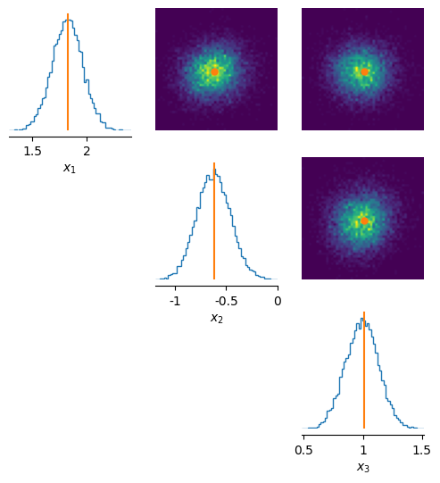

Getting started with sbi¶
Note, you can find the original version of this notebook at /tutorials/00_getting_started.ipynb in the sbi repository.
sbi provides a simple interface to run state-of-the-art algorithms for simulation-based inference.
The overall goal of simulation-based inference is to algorithmically identify model parameters which are consistent with data.
In this tutorial we demonstrate how to get started with the sbi toolbox and how to perform parameter inference on a simple model.
import torch
from sbi.analysis import pairplot
from sbi.inference import NPE
from sbi.utils import BoxUniform
from sbi.utils.user_input_checks import (
check_sbi_inputs,
process_prior,
process_simulator,
)
Parameter inference in a linear Gaussian example¶
Each of the implemented inference methods takes three inputs:
1. observational data (or summary statistics thereof) - the observations
2. a candidate (mechanistic) model - the simulator
3. prior knowledge or constraints on model parameters - the prior
If you are new to simulation-based inference, please first read the information on the homepage of the website to familiarise with the motivation and relevant terms.
For this illustrative example we consider a model simulator that takes in 3 parameters (\(\theta\)). For simplicity, the simulator outputs simulations of the same dimensionality and adds 1.0 and some Gaussian noise to the parameter set.
Note: This is where you instead would use your specific simulator with its parameters.
For the 3-dimensional parameter space we consider a uniform prior between [-2,2].
Note: This is where you would incorporate prior knowlegde about the parameters you want to infer, e.g., ranges known from literature.
num_dim = 3
def simulator(theta):
# linear gaussian
return theta + 1.0 + torch.randn_like(theta) * 0.1
prior = BoxUniform(low=-2 * torch.ones(num_dim), high=2 * torch.ones(num_dim))
Here, we are using this simple toy simulator. In practice, the simulator can be anything
that takes parameters and returns simulated data. The data simulation process is
decoupled from the algorithms implemented in the sbi package. That is, you can
simulate your data beforehand, e.g., on a cluster or using a different programming
language or environment. All that sbi needs is a Tensor of parameters theta and
corresponding simulated data x. And, of course, observed data x_o.
However, sbi also offers a function to run your simulations in parallel. To that end,
we have to ensure that your simulator and prior adhere to the requirements of sbi
such as returning torch.Tensors in a standardised shape.
You can do so with the process_simulator() and process_prior() functions, which
prepare them appropriately. Finally, you can call check_sbi_input() to make sure they
are consistent which each other.
# Check prior, return PyTorch prior.
prior, num_parameters, prior_returns_numpy = process_prior(prior)
# Check simulator, returns PyTorch simulator able to simulate batches.
simulator = process_simulator(simulator, prior, prior_returns_numpy)
# Consistency check after making ready for sbi.
check_sbi_inputs(simulator, prior)
Next, we instantiate the inference object. In this example, we will use neural perform posterior estimation (NPE):
Note: In
sbiversion 0.23.0, we renamed all inference classes from, e.g.,SNPE, toNPE(i.e., we removed theSprefix). The functionality of the classes remains the same. TheNPEclass handles both the amortized (as shown in this tutorial) and sequential (as shown here) versions of neural posterior estimation. An alias forSNPEstill exists for backwards compatibility.Note: This is where you could specify an alternative inference object such as NRE for ratio estimation or NLE for likelihood estimation. Here, you can see all implemented methods.
inference = NPE(prior=prior)
Next, we need simulations, or more specifically, pairs of parameters \(\theta\) which we sample from the prior and corresponding simulations \(x = \mathrm{simulator} (\theta)\). The sbi helper function called simulate_for_sbi allows to parallelize your code with joblib.
Note: If you already have your own parameters, simulation pairs which were generated elsewhere (e.g., on a compute cluster), you would add them here.
num_simulations = 2000
theta = prior.sample((num_simulations,))
x = simulator(theta)
print("theta.shape", theta.shape)
print("x.shape", x.shape)
theta.shape torch.Size([2000, 3])
x.shape torch.Size([2000, 3])
We then pass the simulated data to the inference object. Both theta and x should be a torch.Tensor of type float32.
inference = inference.append_simulations(theta, x)
Next, we train the neural density estimator to learn the association between the simulated data (or data features) and the underlying parameters:
density_estimator = inference.train()
Neural network successfully converged after 255 epochs.
Finally, we use this density estimator to build the posterior distribution \(p(\theta|x)\), i.e., the distributions over paramters \(\theta\) given observation \(x\).
The posterior can then be used to (among other features which go beyond the scope of this introductory tutorial) sample parameters \(\theta\) from the posterior via .sample(), i.e., parameters that are likely given the observation \(x\).
We can also get log-probabilities under the posterior via .log_prob(), i.e., we can evaluate the likelihood of parameters \(\theta\) given the observation \(x\).
posterior = inference.build_posterior(density_estimator)
print(posterior) # prints how the posterior was trained
Posterior p(θ|x) of type DirectPosterior. It samples the posterior network and rejects samples that
lie outside of the prior bounds.
Visualisations of the inferred posterior for a new observation¶
Let’s say we have made some observation \(x_{obs}\) for which we now want to infer the posterior:
Note: this is where your experimental observation would come in. For real observations, of course, you would not have access to the ground truth \(\theta\).
theta_true = prior.sample((1,))
# generate our observation
x_obs = simulator(theta_true)
Given this observation, we can sample from the posterior \(p(\theta|x_{obs})\) and
visualise the posterior. Visualizing a three-dimensional distributions is challenging.
Therefore, we use sbi’s pairplot function that generates a upper triangular grid of
plots, showing the univariate marginals on the diagnonal and every combination of
pairwise marginals for the three parameters on the upper offdiagonal:
samples = posterior.sample((10000,), x=x_obs)
_ = pairplot(samples,
limits=[[-2, 2], [-2, 2], [-2, 2]],
figsize=(6, 6),
labels=[r"$\theta_1$", r"$\theta_2$", r"$\theta_3$"])

Assessing the posterior for the known (\(\theta, x\)) - pair¶
For this special case, we have access to the ground-truth parameters that generated the observation. We can thus assess if the inferred distributions over the parameters match the parameters \(\theta_{true}\) we used to generate our test observation \(x_{obs}\).
Note that in general, the inferred posterior distribution is not neccessarily centered on the underlying “ground-truth” parameters \(\theta\) because there is noise in simulator and limited data. However, it should lie “within” the posterior.
samples = posterior.sample((10000,), x=x_obs)
pairplot(samples,
points=theta_true,
limits=[[-2, 2], [-2, 2], [-2, 2]], figsize=(6, 6),
labels=[r"$\theta_1$", r"$\theta_2$", r"$\theta_3$"]);

Assessing the predictive performance of the posterior¶
Another way to assess the quality of the posterior is checking whether parameters
sampled from the posterior \(p(\theta \mid x_{obs})\) can reproduce the observation
\(x_{obs}\) when we simulate data with them. This posterior predictive distribution
should contain on the \(x_{obs}\). We can again use the pairplot function to
visualize it.
As you can see below, in this Gaussian toy example, the posterior predictive distribution is nicely centered on the data it was conditioned on.
theta_posterior = posterior.sample((10000,), x=x_obs) # sample from posterior
x_predictive = simulator(theta_posterior) # simulate data from posterior
pairplot(x_predictive,
points=x_obs, # plot with x_obs as a point
figsize=(6, 6),
labels=[r"$x_1$", r"$x_2$", r"$x_3$"]);

Finally, we can also compare the probabilities of different parameters under the posterior. The log-probability should ideally indicate that the true parameters, given the corresponding observation, are more likely than a different set of randomly chosen parameters from the prior distribution.
Relative to the obtained log-probabilities, we can investigate the range of log-probabilities of the parameters sampled from the posterior.
# first sample an alternative parameter set from the prior
theta_diff = prior.sample((1,))
log_probability_true_theta = posterior.log_prob(theta_true, x=x_obs)
log_probability_diff_theta = posterior.log_prob(theta_diff, x=x_obs)
log_probability_samples = posterior.log_prob(samples, x=x_obs)
print( r'high for true theta :', log_probability_true_theta)
print( r'low for different theta :', log_probability_diff_theta)
print( r'range of posterior samples: min:', torch.min(log_probability_samples),' max :', torch.max(log_probability_samples))
high for true theta : tensor([3.4911])
low for different theta : tensor([-351.0345])
range of posterior samples: min: tensor(-8.8757) max : tensor(3.9791)
Next steps¶
To learn more about the capabilities of sbi, you can head over to the tutorial
01_gaussian_amortized, for inferring parameters for multiple
observations without retraining.
Alternatively, for an example with an actual simulator, you can read our example for a scientific simulator from neuroscience under Example_00_HodgkinHuxleyModel.